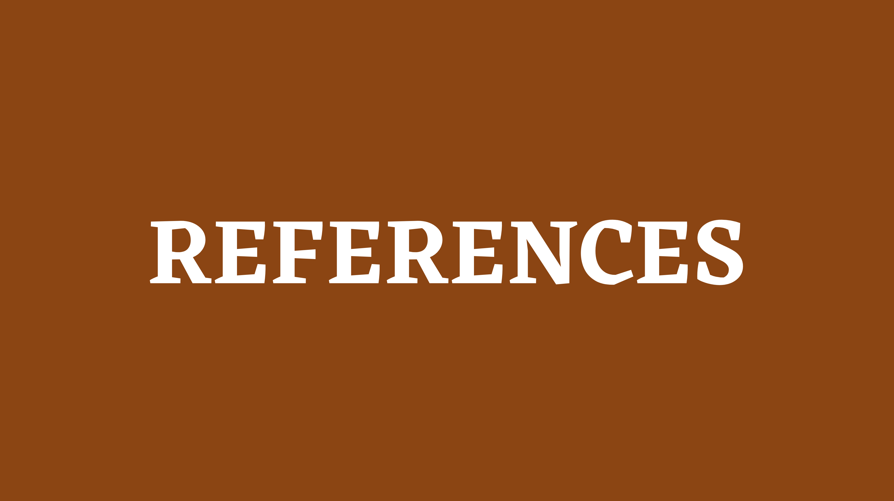
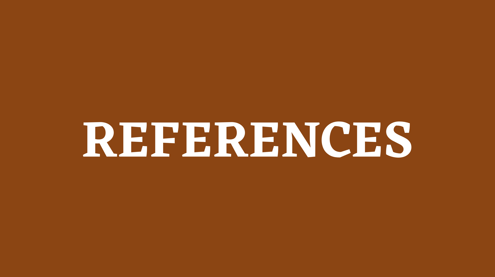

| Home | Watercolor | Digital Art | Pastels | Sculpture | Oil Paint | References |
|---|
Art is a way that people express and convey creative skill, imagination, and emotions. Explore this website to learn more about some art mediums!


 

What's an art medium? There isn't only one way to make art.
There are many different types and styles of art.
These styles are called art mediums.
Source: Jenna Rainy.
jennarainy.com(https://jennarainey.com/5-principles-of-watercolor-flowers/)
Source: Adam Korenman.
schoolofmotion.com(https://www.schoolofmotion.com/blog/how-to-get-started-with-digital-art)
Source: Matt Breen.
gathered.how(https://www.gathered.how/arts-crafts/art/how-to-use-oil-pastels-for-beginners/)
Source: Unsplash.
unsplash.com(https://unsplash.com/s/photos/sculpture)
Source: Chamille White.
Stock Photos.com(https://mymodernmet.com/best-oil-paints/)
Source: W3C.
validator.org(https://validator.w3.org/)
Source: W3C.
jigsaw.org(https://jigsaw.w3.org/css-validator/)


© 2023